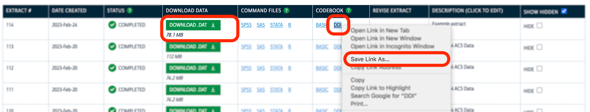

This article provides an overview of how to find, request, download, and read IPUMS data into R. For a general introduction to IPUMS and ipumsr, see the ipumsr home page.
Obtaining IPUMS data
IPUMS data are free, but do require registration. New users can register with a particular IPUMS project by clicking the Register link at the top right of the project website.
Users obtain IPUMS data by creating and submitting an extract request. This specifies which data to include in the resulting extract (or data extract). IPUMS servers process each submitted extract request, and when complete, users can download the extract containing the requested data.
Extracts typically contain both data and metadata files. Data files typically come as fixed-width (.dat) files or comma-delimited (.csv) files. Metadata files contain information about the data file and its contents, including variable descriptions and parsing instructions for fixed-width data files. IPUMS microdata projects provide metadata in DDI (.xml) files. Aggregate data projects provide metadata in either .txt or .csv formats.
Users can submit extract requests and download extracts via either the IPUMS website or the IPUMS API. ipumsr provides a set of client tools to interface with the API. Note that only certain IPUMS projects are currently supported by the IPUMS API.
Obtaining data via an IPUMS project website
To create a new extract request via an IPUMS project website (e.g. IPUMS CPS), navigate to the extract interface for that project by clicking Select Data in the heading of the project website.
The project’s extract interface allows you to explore what’s available, find documentation about data concepts and sources, and specify the data you’d like to download. The data selection parameters will differ across projects; see each project’s documentation for more details on the available options.
If you’ve never created an extract for the project you’re interested in, a good way to learn the basics is to watch a project-specific video on creating extracts hosted on the IPUMS Tutorials page.
Downloading from microdata projects
Once your extract is ready, click the green Download button to download the data file. Then, right-click the DDI link in the Codebook column, and select Save Link As… (see below).

Note that some browsers may display different text, but there should be an option to download the DDI file as .xml. (For instance, on Safari, select Download Linked File As….) For ipumsr to read the metadata, you must save the file in .xml format, not .html format.
Obtaining data via the IPUMS API
Users can also create and submit extract requests within R by using ipumsr functions that interface with the IPUMS API. The IPUMS API currently supports access to the extract system for certain IPUMS collections.
Extract support
ipumsr provides an interface to the IPUMS extract system via the IPUMS API for the following collections:
- IPUMS USA
- IPUMS CPS
- IPUMS International
- IPUMS Time Use (ATUS, AHTUS, MTUS)
- IPUMS Health Surveys (NHIS, MEPS)
- IPUMS NHGIS
Metadata support
For IPUMS NHGIS, ipumsr provides access to comprehensive metadata via the IPUMS API. Users can query NHGIS metadata to explore available data when specifying NHGIS extract requests.
Increased access to metadata for microdata projects is in progress. Currently, the IPUMS API only provides a listing of available samples for each microdata collection. At this time, creating extract requests for these projects requires using the corresponding project websites to find samples and variables of interest and obtain their API identifiers for use in R extract definitions.
Workflow
Once you have identified the data you would like to request, you can use ipumsr functions to define your extract request, submit it, wait for it to process, and download the associated data.
First, define the parameters of your extract. The available extract definition options will differ by IPUMS data collection. See the microdata API request and NHGIS API request vignettes for more details on defining an extract.
# Define a microdata extract request, e.g. for IPUMS CPS
cps_extract_request <- define_extract_micro(
collection = "cps",
description = "2018-2019 CPS Data",
samples = c("cps2018_05s", "cps2019_05s"),
variables = c("SEX", "AGE", "YEAR")
)
# Define an NHGIS extract request
nhgis_extract_request <- define_extract_nhgis(
description = "NHGIS Data via IPUMS API",
datasets = ds_spec(
"1990_STF1",
data_tables = c("NP1", "NP2", "NP3"),
geog_levels = "state"
)
)Next, submit your extract definition. After waiting for it to complete, you can download the files directly to your local machine without leaving your R session:
submitted_extract <- submit_extract(cps_extract_request)
downloadable_extract <- wait_for_extract(submitted_extract)
path_to_data_files <- download_extract(downloadable_extract)You can also get the specifications of your previous extract requests, even if they weren’t made with the API:
past_extracts <- get_extract_history("nhgis")See the introduction to the IPUMS API for more details about how to use ipumsr to interact with the IPUMS API.
Reading IPUMS data
Once you have downloaded an extract, you can load the data into R
with the family of read_*() functions in ipumsr. These
functions expand on those provided in readr in two
ways:
- ipumsr anticipates standard IPUMS file structures, limiting the need for users to manually extract and organize their downloaded files before reading.
- ipumsr uses an extract’s metadata files to automatically attach contextual information to the data. This allows users to easily identify variable names, variable descriptions, and labeled data values (from haven), which are common in IPUMS files.
File loading is covered in depth in the reading IPUMS data vignette.
Microdata files
For microdata files, use the read_ipums_micro_*() family
with the DDI (.xml) metadata file for your extract:
cps_file <- ipums_example("cps_00157.xml")
cps_data <- read_ipums_micro(cps_file)
#> Use of data from IPUMS CPS is subject to conditions including that users should cite the data appropriately. Use command `ipums_conditions()` for more details.
head(cps_data)
#> # A tibble: 6 × 8
#> YEAR SERIAL MONTH ASECWTH STATEFIP PERNUM ASECWT INCTOT
#> <dbl> <dbl> <int+lbl> <dbl> <int+lbl> <dbl> <dbl> <dbl+lbl>
#> 1 1962 80 3 [March] 1476. 55 [Wisconsin] 1 1476. 4883
#> 2 1962 80 3 [March] 1476. 55 [Wisconsin] 2 1471. 5800
#> 3 1962 80 3 [March] 1476. 55 [Wisconsin] 3 1579. 999999998 [Missin…
#> 4 1962 82 3 [March] 1598. 27 [Minnesota] 1 1598. 14015
#> 5 1962 83 3 [March] 1707. 27 [Minnesota] 1 1707. 16552
#> 6 1962 84 3 [March] 1790. 27 [Minnesota] 1 1790. 6375NHGIS files
For NHGIS files, use read_nhgis():
nhgis_file <- ipums_example("nhgis0972_csv.zip")
nhgis_data <- read_nhgis(nhgis_file, verbose = FALSE)
head(nhgis_data)
#> # A tibble: 6 × 25
#> GISJOIN YEAR STUSAB CMSA DIVISIONA MSA_CMSAA PMSA PMSAA REGIONA STATEA
#> <chr> <dbl> <chr> <chr> <lgl> <dbl> <chr> <chr> <lgl> <lgl>
#> 1 G0080 1990 OH 28 NA 1692 Akron, OH… 0080 NA NA
#> 2 G0360 1990 CA 49 NA 4472 Anaheim--… 0360 NA NA
#> 3 G0440 1990 MI 35 NA 2162 Ann Arbor… 0440 NA NA
#> 4 G0620 1990 IL 14 NA 1602 Aurora--E… 0620 NA NA
#> 5 G0845 1990 PA 78 NA 6282 Beaver Co… 0845 NA NA
#> 6 G0875 1990 NJ 70 NA 5602 Bergen--P… 0875 NA NA
#> # ℹ 15 more variables: AREALAND <chr>, AREAWAT <chr>, ANPSADPI <chr>,
#> # FUNCSTAT <chr>, INTPTLAT <dbl>, INTPTLNG <dbl>, PSADC <dbl>, D6Z001 <dbl>,
#> # D6Z002 <dbl>, D6Z003 <dbl>, D6Z004 <dbl>, D6Z005 <dbl>, D6Z006 <dbl>,
#> # D6Z007 <dbl>, D6Z008 <dbl>Spatial boundary files
ipumsr also supports the reading of IPUMS shapefiles (spatial
boundary and location files) into the sf format provided by
the sf package:
shp_file <- ipums_example("nhgis0972_shape_small.zip")
nhgis_shp <- read_ipums_sf(shp_file)
head(nhgis_shp)
#> Simple feature collection with 6 features and 8 fields
#> Geometry type: MULTIPOLYGON
#> Dimension: XY
#> Bounding box: xmin: -129888.4 ymin: -967051.1 xmax: 1948770 ymax: 751282.5
#> Projected CRS: USA_Contiguous_Albers_Equal_Area_Conic
#> # A tibble: 6 × 9
#> PMSA MSACMSA ALTCMSA GISJOIN GISJOIN2 SHAPE_AREA SHAPE_LEN GISJOIN3
#> <chr> <chr> <chr> <chr> <chr> <dbl> <dbl> <chr>
#> 1 3280 3282 41 G3280 3280 2840869482. 320921. G32823280
#> 2 5760 5602 70 G5760 5760 237428573. 126226. G56025760
#> 3 1145 3362 42 G1145 1145 3730749183. 489789. G33621145
#> 4 1920 1922 31 G1920 1920 12068105590. 543164. G19221920
#> 5 0080 1692 28 G0080 0080 2401347006. 218892. G16920080
#> 6 1640 1642 21 G1640 1640 5608404797. 415671. G16421640
#> # ℹ 1 more variable: geometry <MULTIPOLYGON [m]>Ancillary files
ipumsr is primarily designed to read data produced by the IPUMS extract system. However, IPUMS does distribute other files, often available via direct download. In many cases, these can be loaded with ipumsr. Otherwise, these files can likely be handled by existing data reading packages like readr (for delimited files) or haven (for Stata, SPSS, or SAS files).
Exploring file metadata
Load a file’s metadata with read_ipums_ddi() (for
microdata projects) and read_nhgis_codebook() (for NHGIS).
These provide file- and variable-level metadata for a given data source,
which can be used to interpret the data contents.
cps_meta <- read_ipums_ddi(cps_file)
nhgis_meta <- read_nhgis_codebook(nhgis_file)Summarize the variable metadata for a dataset using
ipums_var_info():
ipums_var_info(cps_meta)
#> # A tibble: 8 × 10
#> var_name var_label var_desc val_labels code_instr start end imp_decim
#> <chr> <chr> <chr> <list> <chr> <dbl> <dbl> <dbl>
#> 1 YEAR Survey year "YEAR r… <tibble> "YEAR is … 1 4 0
#> 2 SERIAL Household seria… "SERIAL… <tibble> "SERIAL i… 5 9 0
#> 3 MONTH Month "MONTH … <tibble> NA 10 11 0
#> 4 ASECWTH Annual Social a… "ASECWT… <tibble> "ASECWTH … 12 22 4
#> 5 STATEFIP State (FIPS cod… "STATEF… <tibble> NA 23 24 0
#> 6 PERNUM Person number i… "PERNUM… <tibble> "PERNUM i… 25 26 0
#> 7 ASECWT Annual Social a… "ASECWT… <tibble> "ASECWT i… 27 37 4
#> 8 INCTOT Total personal … "INCTOT… <tibble> "99999999… 38 46 0
#> # ℹ 2 more variables: var_type <chr>, rectypes <lgl>You can also get contextual details for specific variables:
ipums_var_desc(cps_data$INCTOT)
#> [1] "INCTOT indicates each respondent's total pre-tax personal income or losses from all sources for the previous calendar year. Amounts are expressed as they were reported to the interviewer; users must adjust for inflation using Consumer Price Index adjustment factors."
ipums_val_labels(cps_data$STATEFIP)
#> # A tibble: 75 × 2
#> val lbl
#> <int> <chr>
#> 1 1 Alabama
#> 2 2 Alaska
#> 3 4 Arizona
#> 4 5 Arkansas
#> 5 6 California
#> 6 8 Colorado
#> 7 9 Connecticut
#> 8 10 Delaware
#> 9 11 District of Columbia
#> 10 12 Florida
#> # ℹ 65 more rowsLabelled values
ipumsr also provides a family of lbl_*() functions to
assist in accessing and manipulating the value-level metadata included
in IPUMS data. This allows for value labels to be incorporated into the
data processing pipeline. For instance:
# Remove labels for values that do not appear in the data
cps_data$STATEFIP <- lbl_clean(cps_data$STATEFIP)
ipums_val_labels(cps_data$STATEFIP)
#> # A tibble: 5 × 2
#> val lbl
#> <int> <chr>
#> 1 19 Iowa
#> 2 27 Minnesota
#> 3 38 North Dakota
#> 4 46 South Dakota
#> 5 55 Wisconsin
# Combine North and South Dakota into a single value/label pair
cps_data$STATEFIP <- lbl_relabel(
cps_data$STATEFIP,
lbl("38_46", "Dakotas") ~ grepl("Dakota", .lbl)
)
ipums_val_labels(cps_data$STATEFIP)
#> # A tibble: 4 × 2
#> val lbl
#> <chr> <chr>
#> 1 19 Iowa
#> 2 27 Minnesota
#> 3 38_46 Dakotas
#> 4 55 WisconsinSee the value labels vignette for more details.